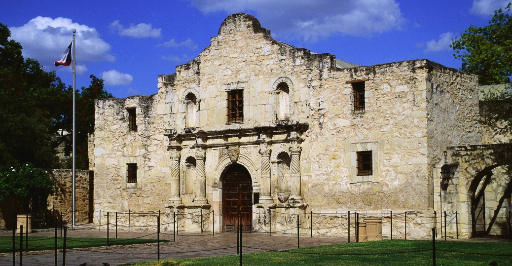

San Antonio is one of the largest cities in America and is constantly growing. Whether it be history, entertainment, culture, or food San Antonio has something to please everybody of all ages. San Antonio is also home to quite a number of sports teams (minor and major). The San Antonio Spurs are one of the best sports teams in America. Whether you are planning to move here or come for a visit, you will not be dissapointed with your stay here in the Alamo City.

San Antonio is rich with culture and history spanning over many years. The Alamo is without a doubt the most historical site in San Antonio. It brings in over 2.5 million tourists a year, wanting to learn more about Texas history and the epic "Battle of the Alamo" whcih played a pivotal role in the Texas Revolution. If the Alamo is not enough to satisfy your history itch, the city has many hsitorical parks and sites to re-live and leanr about the past.